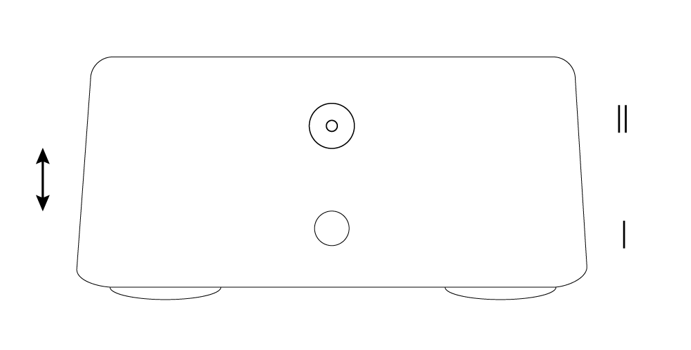

Destination
The purpose of the biocorrector is improvement and stimulation of cell's growth.
Structure
The structure of the biocorrector refers to electronic generators pulse and alternating voltage. Sinusoidal, variable voltage is applied to the emitter.
Function
The main function of this electronic device is to transfer the electrostatic and electromagnetic radiation towards the biological object for the further activation of the living cell.
The list of positive results of the biocorrector:
- Stop and cessation of growth of various kinds of tumors on the body and inside living system;
- Inference from the body of parasitic life forms;
- The removal of toxins from the circulatory system and lymph nodes;
- Stop of development of diabetes mellitus. Reduction of blood sugar;
- Quick recovery of connective tissue with bruises and fractures;
- Recovery of damaged blood vessels;
- Relieves pain symptoms.
The operation procedure of the biocorrector BK-16
- Connect the radiator to the output connector;
- Connect the power cord of the device to a 220V power-socket;
- Install the radiator on the affected area;
- The device is ready for using.
The indicator light on the radiator will light up. Indicator lamp should be faced to an opposite side of human body.
Application Guide
- In the morning it is necessary to affect by biocorrector on five main zones:
— head (forehead) - 7 min.
— neck - 10 min.
— solar plexus - 15 min.
— stomach - 20 min.
— bladder - 25 min.
In the process of biocorrector's work on certain zones, it could be a feeling in the form of scratching from inside or a weak heat inside the body;
- In the daytime, it is necessary to affect by biocorrector on the problem zone, where the disease was formed. Time of exposure to the zone is indicated in P.P.1;
- In the evening, it is necessary to affect by biocorrector's on the problematic zone, where the disease was formed. Time of exposure to the zone is indicated in P.P.1.
Recommendations
- It is recommended to drink more water after the treatment (1 glass). This is necessary in order that the dead viral cells can be quickly excreted from the body in a natural way.
- NECESSARILY: in the evening take 3% hydrogen peroxide - 10 drops per glass of water;
- After the procedure, diarrhea may appear. This is positive dynamics of the organism on impact;
-
When the problem zone is irradiated with a device (which has two modes of work)
— firstly, half of time should be irradiated in mode I.
— then the second half should be irradiated in mode II.
The LED lamp on the emitter will turn to green light. Duration of biocorrector’s work is round-the-clock.
P.P.4. This recommendation applies to day and night procedures.
Mode of operation of morning procedures - switch to position I (bottom).
The selector of the operating modes of the device is located above the output connector, to which the remote radiator is connected.
Mode I - selector's position is located at the bottom.
Mode II - selector's position is located atop.
When the battery is discharged, the green LED light should go out and do not respond on turning on and off the device. After charging the battery, the LED light will again turn into green.
Attachment to the description
The biological cell of both animal and plants is simple and at the same time is complicated system. If the cell is viewed from the point of view of chemistry, then there are not so many chemical elements. But from the point of view of functioning of the cell it is really a complex biological mechanism that works by a certain, specific nature program. This program is embedded in DNA and the cell clearly follows its instructions: how to multiply and what chemical processes must be passed per unit of time. If we consider human body, then it comes into being from fertilization male and female ova. At the time of conception, the human body does not grow immediately and under a microscope we will not see this small body, which then slowly will become bigger and bigger. A plant or tree grows from a small seed planted in the ground.
It means that growth and transformation from the cell of a living organism is controlled by some invisible biological program. This program allows certain organs to appear at the place, where they must be. As in the body of human, it’s the same in the plant world. Biological cells coherently work among themselves. The ability of cells to grow and recover from received damage is also the work of biological program. And if the program works normally, the whole system will be active and healthy. But it does not always happen. And in case of failure of biological program – cell starts to function incorrectly. That’s why there are various kinds of diseases. And without external intervention, the biological cell will be in not suitable conditions to get recovered.
The main symptoms of disease are:
- The failure of program and the cell starts to work in a wrong way;
- Loss of electrical charge in the cell for self-healing;
- Appearance of parasitic cells, which are not intended for this site of living organism. In modern world, they are called viruses or cells of different biological origin. These are malignant and not malignant tumors of various species. They can be in plants or in animals.
As soon as failure in work happens, the living organism becomes ill. And if in time you will not take measures to restore biological cells, then the living organism will die. A viral cell is also a cell of biological origin, but it works by its own program and interferes with other cells of the body to develop system correctly.
The main purpose of biocorrector is to block the biological programs of the viral cell and stimulate growth and activate living cell. When the virus is active, it suppresses almost all necessary functions of living cell. A viral cell of various kinds feeds by the energy of healthy biological cell and does not allow it to be active. If the cell is active and healthy, then it is able to resist with disease-causing viruses.
And since the living cell is weak, then the virus enters into force, and we observe the process of appearance of disease. In the process of biocorrector's work to the affected place of the living organism or plant - the activation of living cell is carried out, because of «transfer» of electric charge from the biocorrector, and it becomes able to resist with viral cells. The virus dies and the body begins to restore until it will get to the state of wright functioning.
The biological program is restored and the body as a whole system begins to get well.